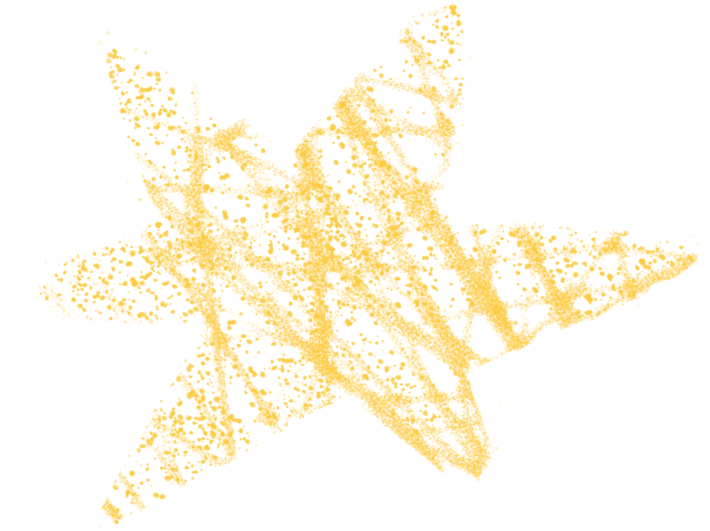
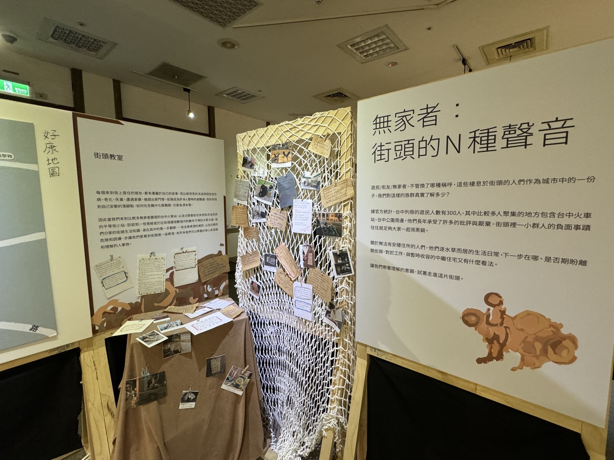
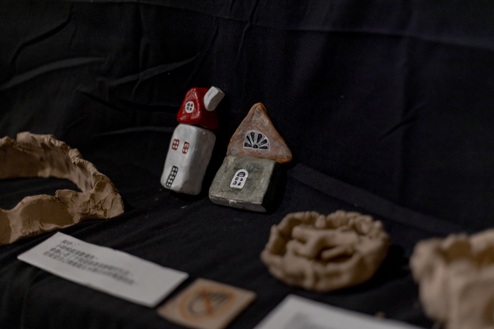
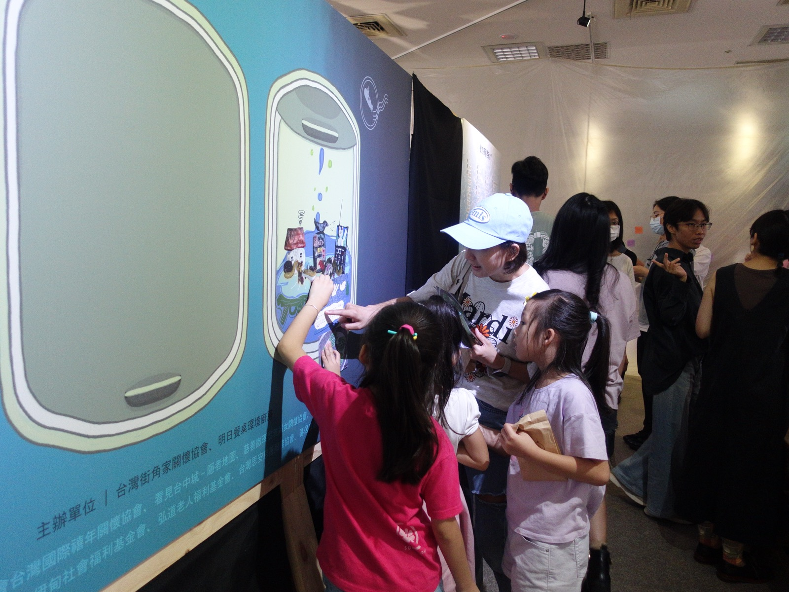
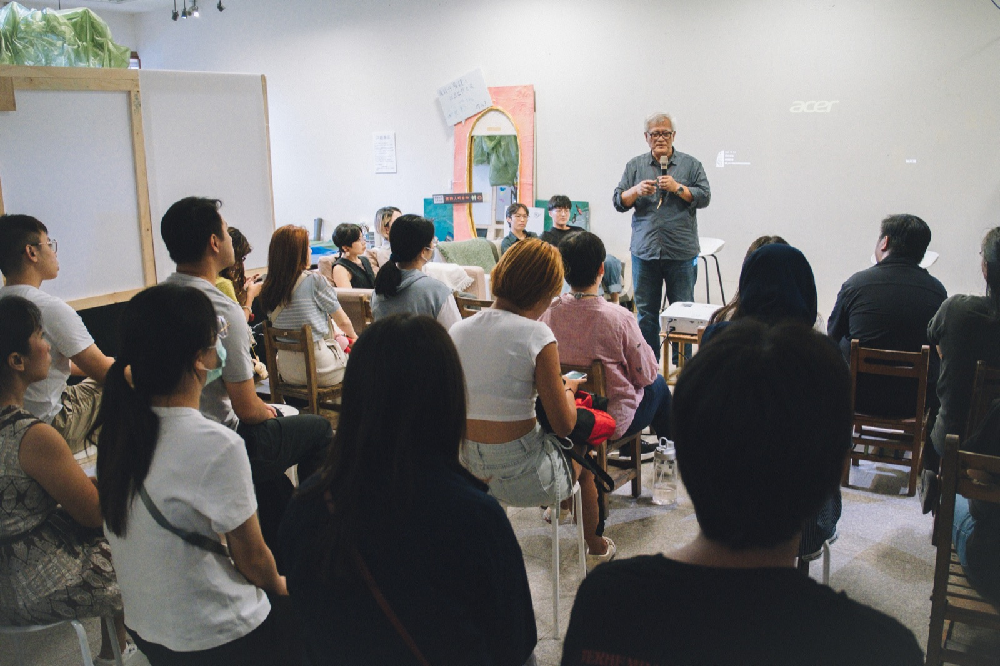
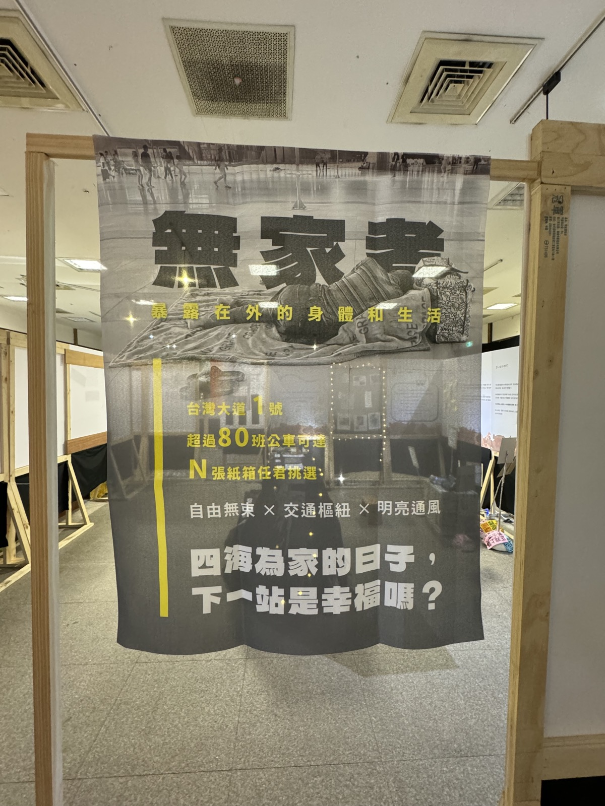
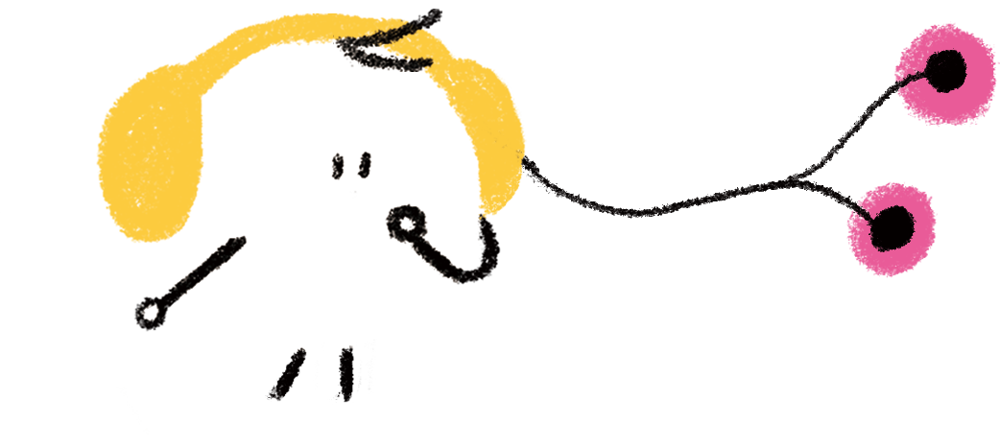
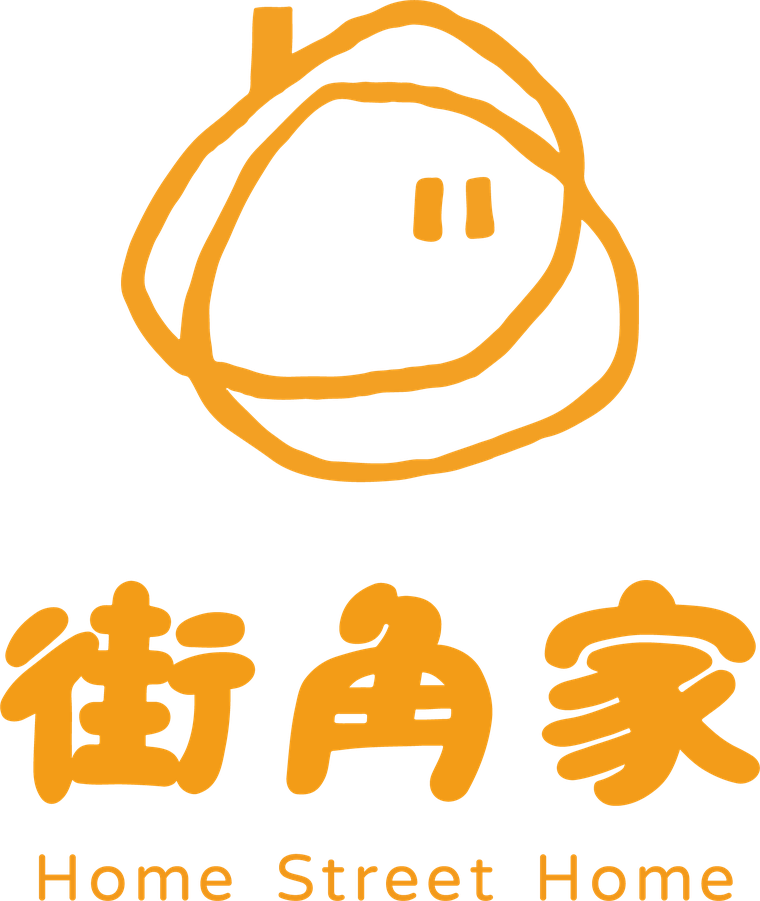

「肉眼所見的真實，在表象的秩序之下，有伏流，甚至有狂風暴雨。我們都害怕混亂，可混亂裡，有誠實的聲音。」
台北今天的光彩奪目，其實是百多年來，由南來北往的逐夢人——一無所有的人、底層勞工、移民、原住民與青年，付出心血、貢獻努力打造出來的結果。從某種角度來說，今天繁華的台北，不單是成功的人、有錢人的台北；也應該是挫折的人、貧窮人的台北。
—— 孫大川〈貧窮人的台北發起書〉
承襲這樣的精神與行動方法，於 2024 年，由關注無家者議題的街角家主持，與台中多個議題組織共同發起「貧窮人的台中」。面向包含但不限於：女性無家者、移工、精神疾患、地方與社宅、永續等等，以「看見」、「聆聽」、「體會」、「團結」為行動核心，並以貧窮經驗者為主體，紀錄、傾聽身處其中的生命故事，陪伴發聲，共同前行。
台灣大眾對貧窮的認識，普遍落在第三世界國家的「絕對貧窮」；然而貧窮除了經濟困境，更包含社會關係、制度、污名等面向。唯有更完整認識貧窮，社會才有機會共同前進。
理解貧窮的途徑，除了數據與研究外，更需要聆聽親身經驗者的聲音。陪伴整理經驗者的生命故事，以創作、講座等形式向社會呈現多元貧窮樣貌。
除了社工、社福組織，我們也積極創造多元群體的認識與交流。過去曾有藝術家、老師、劇場工作者、媒體工作者參與貧中，而後在各自領域發揮影響力，拓展更多涵容、友善的空間。
失序，是人格的敗壞，還是人心痛苦的外顯？
貧窮者的污名，經常源自其外顯的「失序行為」，例如：酒癮、懶惰、骯髒、犯罪、精神疾病、暴力等等。這些失序行為，經常被歸因於貧窮者人格或道德的缺陷，對窮人產生諸多排斥、歧視、社會排除。然而，在失序的背後，是否有我們不理解的成因？是否能有正向回應的方式？
失序的行動往往帶著傷害性，承受痛苦的人或社會，難以不用厭惡的態度詮釋失序。然而，失序的成因正來自痛苦，緣自其「需求的匱乏」、「身心的痛苦」、「受困的處境」，我們試圖透過失序者的經驗，理解失序背後的真正邏輯。
失序行動，不論朝向衝動毀滅，還是生存釋放，看似消極病態，事實上都是主體為了滿足自己的需要而付諸的行動。
任何階級、角色、社會關係中，都可能存在失序，可能就是我們身邊的人，可能就是你，就是我。意識到原來我們也擁有失序、也可能痛苦、匱乏、受困，在這個層次中，我們開始與窮人產生了連結。
貧窮不只是「沒有錢」。它像一條環環相扣的鎖鏈，讓一個人越來越難走出來。
— 翻牌，看每個階段發生了什麼 —
匱乏、不穩定的收入、被剝奪的處境，帶來身心與人際關係上的傷害。
長期累積的痛苦，容易外顯為外界眼中的「失序行為」或疾病。
失序招來誤解、歧視與社會排除，讓人更被推向邊緣。
被排除的處境，阻礙了康復與重新回到社會的路，痛苦於是不斷循環。
看懂這條鎖鏈，我們就能明白：許多「失序」，其實是痛苦的外顯，而不是人格的缺陷。要鬆開這條鎖鏈，需要的不是責備，而是理解與陪伴。
上一屆「貧窮人的台中」串連台中在地的議題組織，用一檔展覽與一系列線下行動，邀請大眾走進貧窮經驗者的世界。面向涵蓋女性無家者、移工、精神疾患、地方與社宅、永續等多元議題——我們相信，理解貧窮，需要不只一種入口。

多種貧窮型態的靜態展區，用文字、影像與互動細節，讓觀展者成為展覽的一部分。

與經驗者一起動手創作，把生命經驗轉化為看得見、摸得到的作品。

透過遊戲換位思考，體會貧窮處境中每一個艱難的選擇與無奈。

邀請經驗者與各領域工作者現身說法，面對面地交流與提問。

走進台中街區，閱讀在這座城市裡真實發生的貧窮故事。
一場展覽，成為許多人重新認識貧窮、也重新認識彼此的起點。

謝謝你們舉辦這個展覽！讓我認識了一些我曾幾何時可能遇過的人，過去是需要被看見的，正因為看見，才能產生出一些變化。
以往雖然知道有貧困者的存在，但也僅此而已，這次的展覽讓我們看見了貧困者所面臨的難處。
展區設計得很用心，很多小細節和互動，讓觀展者不像是局外人，而能成為展覽的一部分。
用深入淺出的文字介紹，讓觀展人連結自身經驗，思索自己還能為世界做些什麼，是很貼近人心的做法。
參加走讀，很謝謝你們辦理這麼有特色的主題，卻與在台中生活的人們息息相關。講座的現身說法，從不同角色分享真誠的心聲，都非常珍貴。
喜歡書寫性別困境的小小展間，身為一位女性，可以從裡面深深感受到那份無力感與剝奪感。

街角家是一個在台中服務無家者的社福組織，關注城市裡不同型態的貧窮。一方面提供貧窮者直接服務——生活支持、社區培力、義診與藝術療癒；另一方面透過線下的倡議行動，幫助大眾理解貧窮的多元面向，減少對貧窮者的恐懼、污名與社會排除，一起搭建友善而共融的社會。
2024 年起，街角家把「窮學盟」每年舉辦的大型倡議行動〈貧窮人的台北〉帶到台中，發起「貧窮人的台中」，決心深耕這座城市裡的貧窮議題。
聆聽失序之聲
透過失序者的生命經驗，看見失序的全貌。
看見並認識失序，在失序中彼此連結。
相認、結盟，才有力量作出抵抗。